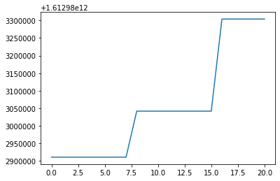
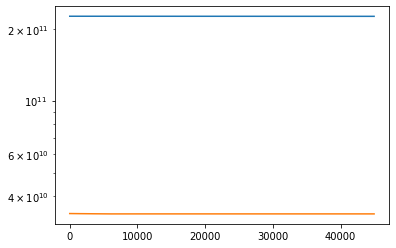
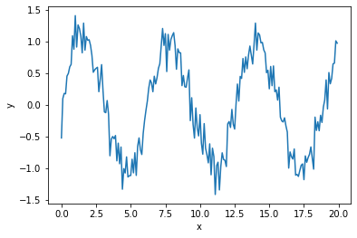
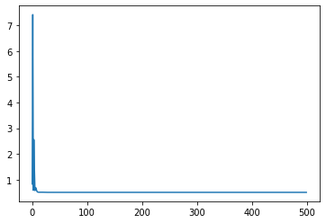
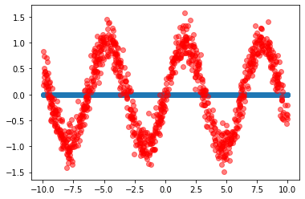
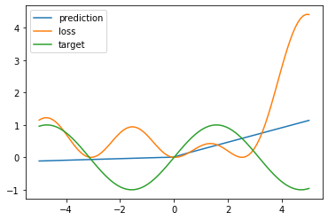
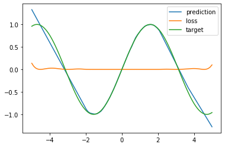
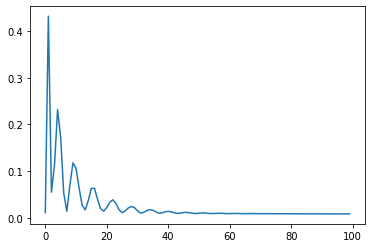
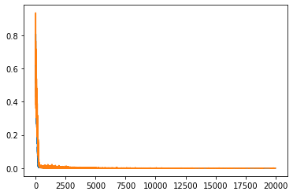
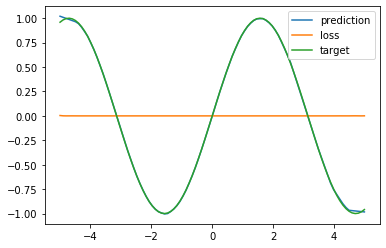

[1]:
import fitIR
import fitIR.models as models
import fitIR.analyse as analyse
from astropy.cosmology import WMAP9 as cosmo
import jax
import numpy as np
import pylab as plt
import astropy.units as u
import scipy.integrate as integrate
%matplotlib inline
import jax.numpy as jnp
from jax import grad, jit, vmap, value_and_grad
from jax import random
# Generate key which is used to generate random numbers
key = random.PRNGKey(1)
/Users/pdh21/anaconda3/envs/xidplus/lib/python3.6/site-packages/jax/lib/xla_bridge.py:130: UserWarning: No GPU/TPU found, falling back to CPU.
warnings.warn('No GPU/TPU found, falling back to CPU.')
[2]:
from jax.experimental import stax
Make training set by randomly sampling parameter space¶
[3]:
totlir = np.arange(8,15,0.6)
redshift = np.arange(0.01,5.01,0.5)
temperature = np.arange(10,70,10)
[4]:
def generate_samples(size=100):
#get parameter values from uniform distribution
LIR=np.random.uniform(low=8,high=15,size=size)
redshift=np.random.uniform(low=0.01,high=6,size=size)
temperature=np.random.uniform(low=10,high=70,size=size)
#get standard deviation and mean for uniform dist
LIR_sd=(15-8)/np.sqrt(12)
LIR_mean=0.5*(15+8)
red_sd=(6-0.01)/np.sqrt(12)
red_mean=0.5*(0.01+6)
temp_sd=(70-10)/np.sqrt(12)
temp_mean=0.5*(70+10)
return np.vstack((LIR,redshift,temperature)).T,np.vstack(((LIR-LIR_mean)/LIR_sd,(redshift-red_mean)/red_sd,(temperature-temp_mean)/temp_sd)).T
[5]:
samp,samp_stand=generate_samples(1000)
[6]:
samp.shape
[6]:
(1000, 3)
[7]:
import xidplus
from xidplus import filters
filter_=filters.FilterFile(file=xidplus.__path__[0]+'/../test_files/filters.res')
/Users/pdh21/anaconda3/envs/xidplus/lib/python3.6/site-packages/dask/config.py:168: YAMLLoadWarning: calling yaml.load() without Loader=... is deprecated, as the default Loader is unsafe. Please read https://msg.pyyaml.org/load for full details.
data = yaml.load(f.read()) or {}
WARNING: AstropyDeprecationWarning: block_reduce was moved to the astropy.nddata.blocks module. Please update your import statement. [astropy.nddata.utils]
WARNING: Logging before flag parsing goes to stderr.
W0104 11:48:46.144933 4605595072 logger.py:204] AstropyDeprecationWarning: block_reduce was moved to the astropy.nddata.blocks module. Please update your import statement.
[8]:
SPIRE_250=filter_.filters[215]
SPIRE_350=filter_.filters[216]
SPIRE_500=filter_.filters[217]
MIPS_24=filter_.filters[201]
PACS_100=filter_.filters[250]
PACS_160=filter_.filters[251]
bands=[SPIRE_250,SPIRE_350,SPIRE_500,MIPS_24,PACS_100,PACS_160]
eff_lam=[250.0,350.0,500.0,24.0, 100.0,160.0]
[9]:
from scipy.interpolate import interp1d
def get_fluxes(samples):
measured=np.empty_like(samples)
val = np.linspace(np.log10(3E8/8E-6),np.log10(3E8/1E-3),1000)
val = 10**val
for i,s in enumerate(samples):
z=s[1]
prior = {}
prior['z'] = s[1]
prior['log10LIR'] = s[0]
prior['T'] = s[2]
prior['emissivity'] = 1.5
source = models.greybody(prior)
nu,lnu = source.generate_greybody(val,z)
wave = 3E8/nu*1E6
sed=interp1d(wave,lnu)
dist = cosmo.luminosity_distance(z).to(u.cm).value
for b in range(0,3):
measured[i,b]=(1.0+z)*filters.fnu_filt(sed(bands[b].wavelength/1E4),
3E8/(bands[b].wavelength/1E10),
bands[b].transmission,
3E8/(eff_lam[b]*1E-6),
sed(eff_lam[b]))/(4*np.pi*dist**2)
return measured/10**(-26)
[10]:
measured=get_fluxes(samp)
Use stax to create neural net¶
[221]:
from jax.experimental import stax
from jax.experimental.stax import (BatchNorm, Conv, Dense, Flatten,
Relu, LogSoftmax,LeakyRelu)
import time
[63]:
batch_size=100
num_inputs=3
num_bands=3
#stax provides an intialising function and a function for doing a forward pass
init_fun,sed_emu = stax.serial(Dense(num_inputs),Relu,
Dense(20),Relu,
Dense(num_bands))
[64]:
#function to get initial parameters of neural net
_, params = init_fun(key, (batch_size, num_inputs))
[70]:
import torch
from torch.utils.data import Dataset, DataLoader
[ ]:
[71]:
## class for sed using the torch dataset class
class sed_data(Dataset):
def __init__(self,params,fluxes):
self.X=params
self.y=fluxes
def __len__(self):
return len(self.X)
def __getitem__(self,idx):
return self.X[idx],self.y[idx]
[72]:
## generate random SED samples
samp_train,samp_stand_train=generate_samples(2000)
## Use Steve's code and xidplus filters to get fluxes
measured_train=get_fluxes(samp_train)
## use data in SED dataclass
ds = sed_data(samp_stand_train,measured_train)
## use torch DataLoader
train_loader = DataLoader(ds, batch_size=batch_size,)
## do same but for test set
samp_test,samp_stand_test=generate_samples(500)
measured_test=get_fluxes(samp_test)
ds = sed_data(samp_stand_test,measured_test)
test_loader = DataLoader(ds, batch_size=batch_size)
the update function computes teh gradient of the loss with respect to the parameters for a batch. We use predefined optimisers and choose Adan to be our optmisier
[77]:
from jax.experimental import optimizers
@jit
def update(params, x, y, opt_state):
""" Compute the gradient for a batch and update the parameters """
value, grads = value_and_grad(loss)(params, x, y)
opt_state = opt_update(0, grads, opt_state)
return get_params(opt_state), opt_state, value
[83]:
def accuracy(params, data_loader):
""" Compute the accuracy for the SED emulator"""
acc_total = 0
for batch_idx, (data, target) in enumerate(data_loader):
x=jnp.asarray(data)
predicted_flux=sed_emu(params, x)
acc_total += jnp.sum((predicted_flux - jnp.asarray(target))**2)
return acc_total/len(data_loader.dataset)
def loss(params, images, targets):
preds = sed_emu(params, jnp.asarray(images))
return jnp.sqrt(jnp.mean((jnp.asarray(targets) - preds)**2))
[86]:
def run_greybody_training_loop(num_epochs, opt_state):
""" Implements a learning loop over epochs. """
# Initialize placeholder for loggin
log_acc_train, log_acc_test, train_loss = [], [], []
# Get the initial set of parameters
params = get_params(opt_state)
# Get initial accuracy after random init
train_acc = accuracy(params, train_loader)
test_acc = accuracy(params, test_loader)
log_acc_train.append(train_acc)
log_acc_test.append(test_acc)
# Loop over the training epochs
for epoch in range(num_epochs):
start_time = time.time()
for batch_idx, (data, target) in enumerate(train_loader):
x=jnp.asarray(data)
y=jnp.asarray(target)
params, opt_state, loss = update(params, x, y, opt_state)
train_loss.append(loss)
epoch_time = time.time() - start_time
print(len(params))
train_acc = accuracy(params, train_loader)
test_acc = accuracy(params, test_loader)
log_acc_train.append(train_acc)
log_acc_test.append(test_acc)
print("Epoch {} | T: {:0.2f} | Train A: {:0.3f} | Test A: {:0.3f}".format(epoch+1, epoch_time,
train_acc, test_acc,))
return train_loss, log_acc_train, log_acc_test
[89]:
step_size = 1e-5
opt_init, opt_update, get_params = optimizers.adam(step_size)
opt_state = opt_init(params)
num_epochs = 20
train_loss, train_log, test_log = run_greybody_training_loop(num_epochs,
opt_state)
5
Epoch 1 | T: 0.08 | Train A: 1612982910976.000 | Test A: 202752896.000
5
Epoch 2 | T: 0.08 | Train A: 1612982910976.000 | Test A: 202753440.000
5
Epoch 3 | T: 0.07 | Train A: 1612982910976.000 | Test A: 202753904.000
5
Epoch 4 | T: 0.08 | Train A: 1612982910976.000 | Test A: 202754352.000
5
Epoch 5 | T: 0.08 | Train A: 1612982910976.000 | Test A: 202754864.000
5
Epoch 6 | T: 0.07 | Train A: 1612982910976.000 | Test A: 202755440.000
5
Epoch 7 | T: 0.08 | Train A: 1612982910976.000 | Test A: 202756128.000
5
Epoch 8 | T: 0.07 | Train A: 1612983042048.000 | Test A: 202756848.000
5
Epoch 9 | T: 0.06 | Train A: 1612983042048.000 | Test A: 202757568.000
5
Epoch 10 | T: 0.07 | Train A: 1612983042048.000 | Test A: 202758224.000
5
Epoch 11 | T: 0.07 | Train A: 1612983042048.000 | Test A: 202758912.000
5
Epoch 12 | T: 0.06 | Train A: 1612983042048.000 | Test A: 202759600.000
5
Epoch 13 | T: 0.07 | Train A: 1612983042048.000 | Test A: 202760272.000
5
Epoch 14 | T: 0.08 | Train A: 1612983042048.000 | Test A: 202760960.000
5
Epoch 15 | T: 0.07 | Train A: 1612983042048.000 | Test A: 202761712.000
5
Epoch 16 | T: 0.10 | Train A: 1612983304192.000 | Test A: 202762480.000
5
Epoch 17 | T: 0.06 | Train A: 1612983304192.000 | Test A: 202763232.000
5
Epoch 18 | T: 0.06 | Train A: 1612983304192.000 | Test A: 202764016.000
5
Epoch 19 | T: 0.06 | Train A: 1612983304192.000 | Test A: 202764816.000
5
Epoch 20 | T: 0.09 | Train A: 1612983304192.000 | Test A: 202765600.000
[90]:
plt.plot(train_log)
[90]:
[<matplotlib.lines.Line2D at 0x7f8149a10978>]

try simplifying¶
[568]:
samp_train,samp_stand_train=generate_samples(10000)
measured_train=get_fluxes(samp_train)
ds = sed_data(samp_stand_train,measured_train)
train_loader = DataLoader(ds, batch_size=batch_size,)
samp_test,samp_stand_test=generate_samples(500)
measured_test=get_fluxes(samp_test)
num_inputs=3
num_bands=1
init_fun,sed_emu = stax.serial(Dense(num_inputs),Relu,
Dense(num_bands))
# Initialise the network with four inputs
out_shape, net_params = init_fun(key,(-1, 3))
ytrain=jnp.asarray(measured_train[:,0])
Xtrain=jnp.asarray(samp_stand_train)
ytest=jnp.asarray(measured_test[:,0])
Xtest=jnp.asarray(samp_stand_test)
def loss(params):
predictions = sed_emu(params, Xtrain)
return jnp.mean((ytrain - predictions)**2)
def loss_test(params):
predictions = sed_emu(params, Xtest)
return jnp.mean((ytest - predictions)**2)
opt_init, opt_update, get_params = optimizers.adam(0.01)
@jit
def step(i, opt_state):
# Parameters for the optimisation algorithm
params = get_params(opt_state)
# Gradient of the loss function
g = grad(loss)(params)
# Update step
return opt_update(i, g, opt_state),loss(params),loss_test(params)
# Optimiser initialisation
opt_state = opt_init(net_params)
all_loss=[]
all_loss_test=[]
for i in range(50000):
# Train step
opt_state,loss_iter,loss_test_iter = step(i, opt_state)
all_loss.append(loss_iter)
all_loss_test.append(loss_test_iter)
# Final parameters after training
net_params = get_params(opt_state)
---------------------------------------------------------------------------
KeyboardInterrupt Traceback (most recent call last)
<ipython-input-568-393ad2f19ff4> in <module>
47 for i in range(50000):
48 # Train step
---> 49 opt_state,loss_iter,loss_test_iter = step(i, opt_state)
50 all_loss.append(loss_iter)
51 all_loss_test.append(loss_test_iter)
~/anaconda3/envs/xidplus/lib/python3.6/site-packages/jax/api.py in f_jitted(*args, **kwargs)
215 backend=backend,
216 name=flat_fun.__name__,
--> 217 donated_invars=donated_invars)
218 return tree_unflatten(out_tree(), out)
219
~/anaconda3/envs/xidplus/lib/python3.6/site-packages/jax/core.py in bind(self, fun, *args, **params)
1160
1161 def bind(self, fun, *args, **params):
-> 1162 return call_bind(self, fun, *args, **params)
1163
1164 def process(self, trace, fun, tracers, params):
~/anaconda3/envs/xidplus/lib/python3.6/site-packages/jax/core.py in call_bind(primitive, fun, *args, **params)
1151 tracers = map(top_trace.full_raise, args)
1152 with maybe_new_sublevel(top_trace):
-> 1153 outs = primitive.process(top_trace, fun, tracers, params)
1154 return map(full_lower, apply_todos(env_trace_todo(), outs))
1155
~/anaconda3/envs/xidplus/lib/python3.6/site-packages/jax/core.py in process(self, trace, fun, tracers, params)
1163
1164 def process(self, trace, fun, tracers, params):
-> 1165 return trace.process_call(self, fun, tracers, params)
1166
1167 def post_process(self, trace, out_tracers, params):
~/anaconda3/envs/xidplus/lib/python3.6/site-packages/jax/core.py in process_call(self, primitive, f, tracers, params)
573
574 def process_call(self, primitive, f, tracers, params):
--> 575 return primitive.impl(f, *tracers, **params)
576 process_map = process_call
577
~/anaconda3/envs/xidplus/lib/python3.6/site-packages/jax/interpreters/xla.py in _xla_call_impl(fun, device, backend, name, donated_invars, *args)
557 *unsafe_map(arg_spec, args))
558 try:
--> 559 return compiled_fun(*args)
560 except FloatingPointError:
561 assert FLAGS.jax_debug_nans # compiled_fun can only raise in this case
~/anaconda3/envs/xidplus/lib/python3.6/site-packages/jax/interpreters/xla.py in _execute_compiled(compiled, avals, handlers, *args)
799 device, = compiled.local_devices()
800 input_bufs = list(it.chain.from_iterable(device_put(x, device) for x in args if x is not token))
--> 801 out_bufs = compiled.execute(input_bufs)
802 if FLAGS.jax_debug_nans: check_nans(xla_call_p, out_bufs)
803 return [handler(*bs) for handler, bs in zip(handlers, _partition_outputs(avals, out_bufs))]
KeyboardInterrupt:
[569]:
sed_emu(net_params,jnp.asarray(samp_stand_test))
[569]:
DeviceArray([[ 1.15468442e+00],
[-9.58508172e-04],
[ 2.54261899e+00],
[ 3.60584527e-01],
[-9.58508172e-04],
[ 2.07726550e+00],
[ 9.92553949e-01],
[-9.58508172e-04],
[ 2.42397380e+00],
[ 2.25675121e-01],
[-9.58508172e-04],
[ 1.56079197e+00],
[-9.58508172e-04],
[ 2.42112923e+00],
[-4.59634215e-02],
[-2.07831711e-02],
[-3.63815483e-03],
[-4.87463474e-02],
[ 1.26780784e-02],
[ 2.65504003e+00],
[ 9.33449447e-01],
[ 3.37957054e-01],
[-9.58508172e-04],
[-9.58508172e-04],
[-9.58508172e-04],
[-9.58508172e-04],
[ 7.08476484e-01],
[-9.58508172e-04],
[ 6.70050085e-01],
[-9.58508172e-04],
[-9.58508172e-04],
[-9.58508172e-04],
[-9.58508172e-04],
[-9.58508172e-04],
[ 2.29025197e+00],
[ 2.45833492e+00],
[-9.58508172e-04],
[ 2.53023952e-01],
[ 3.36646605e+00],
[ 1.12742388e+00],
[-9.58508172e-04],
[-9.58508172e-04],
[-9.58508172e-04],
[-9.58508172e-04],
[-9.58508172e-04],
[ 7.37486780e-01],
[ 1.14556301e+00],
[-9.58508172e-04],
[ 2.45107889e+00],
[-8.30899831e-03],
[-9.58508172e-04],
[-9.58508172e-04],
[-9.58508172e-04],
[-9.58508172e-04],
[-9.58508172e-04],
[-9.58508172e-04],
[-9.58508172e-04],
[-9.58508172e-04],
[-9.58508172e-04],
[ 1.88620603e+00],
[-9.58508172e-04],
[-8.54014605e-02],
[ 1.26462663e-03],
[ 7.60492921e-01],
[-9.58508172e-04],
[-9.58508172e-04],
[ 2.11973637e-02],
[-9.58508172e-04],
[ 5.43062389e-01],
[-9.58508172e-04],
[-3.95501554e-02],
[-9.58508172e-04],
[ 5.96175730e-01],
[ 1.57901466e+00],
[ 3.13268751e-02],
[-9.58508172e-04],
[-4.78294715e-02],
[-9.58508172e-04],
[ 6.70954704e-01],
[ 2.45240355e+00],
[ 1.23606078e-01],
[ 3.76608753e+00],
[-9.58508172e-04],
[ 9.04388279e-02],
[-9.58508172e-04],
[ 9.68263298e-02],
[ 1.20879924e+00],
[-9.58508172e-04],
[ 3.99760783e-01],
[-9.58508172e-04],
[ 1.06341207e+00],
[-9.58508172e-04],
[ 1.59416497e+00],
[-9.58508172e-04],
[-9.58508172e-04],
[-9.58508172e-04],
[-9.58508172e-04],
[-9.58508172e-04],
[-9.58508172e-04],
[ 1.98000729e+00],
[-9.58508172e-04],
[-9.58508172e-04],
[-9.58508172e-04],
[ 3.10756564e-01],
[ 1.43007517e+00],
[ 3.09739560e-01],
[-9.58508172e-04],
[-9.58508172e-04],
[ 2.00219893e+00],
[ 4.44864899e-01],
[-9.58508172e-04],
[-2.23131012e-02],
[-9.58508172e-04],
[ 5.54561436e-01],
[ 3.48940992e+00],
[-9.58508172e-04],
[ 8.38076234e-01],
[ 2.51870096e-01],
[ 1.22517738e-02],
[ 1.65864229e+00],
[-9.58508172e-04],
[ 3.26522887e-01],
[-9.58508172e-04],
[ 2.00894713e+00],
[ 1.69056046e+00],
[ 2.11957169e+00],
[ 4.13133651e-02],
[ 2.30553699e+00],
[ 4.39177006e-01],
[ 9.29203212e-01],
[-7.32375905e-02],
[ 1.95634222e+00],
[ 9.30451453e-02],
[ 2.66024208e+00],
[ 1.20262635e+00],
[ 6.85943246e-01],
[-9.58508172e-04],
[ 2.04046631e+00],
[-9.58508172e-04],
[-9.58508172e-04],
[-9.58508172e-04],
[ 4.22765702e-01],
[-9.58508172e-04],
[ 1.16487467e+00],
[-9.58508172e-04],
[ 1.86354935e+00],
[-9.58508172e-04],
[-9.58508172e-04],
[ 2.06652239e-01],
[ 2.36769032e+00],
[-3.49428840e-02],
[ 1.80661845e+00],
[ 2.92194390e+00],
[-9.58508172e-04],
[-9.58508172e-04],
[ 8.83281305e-02],
[ 1.00651944e+00],
[ 1.32672429e+00],
[-9.58508172e-04],
[-9.58508172e-04],
[ 1.23403108e+00],
[-9.58508172e-04],
[ 2.55370712e+00],
[ 1.57427931e+00],
[-9.58508172e-04],
[ 2.74964261e+00],
[-9.58508172e-04],
[ 2.01618028e+00],
[ 2.12437820e+00],
[-9.58508172e-04],
[ 1.35899627e+00],
[-9.58508172e-04],
[ 8.47430825e-02],
[ 1.93455076e+00],
[ 4.79390144e-01],
[ 4.26982582e-01],
[-9.58508172e-04],
[ 1.36406803e+00],
[ 1.03376615e+00],
[ 2.17851710e+00],
[-4.90818778e-03],
[-7.52505660e-02],
[ 9.08556998e-01],
[ 2.23048449e+00],
[ 1.88323116e+00],
[-9.58508172e-04],
[-9.58508172e-04],
[-7.51304105e-02],
[ 1.63734949e+00],
[-9.58508172e-04],
[ 9.05178666e-01],
[ 1.92167208e-01],
[-9.58508172e-04],
[-9.58508172e-04],
[-9.58508172e-04],
[ 6.48726404e-01],
[-9.58508172e-04],
[-9.58508172e-04],
[ 4.73501742e-01],
[ 2.48021126e+00],
[ 5.46120346e-01],
[ 2.39680481e+00],
[-9.58508172e-04],
[-9.58508172e-04],
[ 3.52483541e-01],
[ 9.23355043e-01],
[-4.91245277e-02],
[-9.58508172e-04],
[-9.58508172e-04],
[ 4.40184474e-02],
[-9.58508172e-04],
[ 1.92564821e+00],
[ 2.45729908e-02],
[ 8.60888958e-01],
[-9.58508172e-04],
[ 1.10020638e+00],
[ 2.01163435e+00],
[-9.58508172e-04],
[-9.58508172e-04],
[ 6.40236139e-02],
[-9.58508172e-04],
[ 2.89744663e+00],
[ 1.31634557e+00],
[ 3.54226613e+00],
[-9.58508172e-04],
[ 5.94921231e-01],
[-9.58508172e-04],
[-9.58508172e-04],
[-2.43302714e-02],
[ 4.88250367e-02],
[-9.58508172e-04],
[-9.58508172e-04],
[-5.64744212e-02],
[ 1.38399935e+00],
[-9.58508172e-04],
[-9.58508172e-04],
[-9.58508172e-04],
[ 2.02204275e+00],
[-9.58508172e-04],
[ 3.76921058e-01],
[-9.58508172e-04],
[ 2.43769269e-02],
[-9.58508172e-04],
[ 2.69250751e+00],
[-9.58508172e-04],
[ 2.32621837e+00],
[-9.58508172e-04],
[ 2.58438587e+00],
[-9.58508172e-04],
[-9.58508172e-04],
[ 1.01696908e+00],
[ 1.73390257e+00],
[-9.58508172e-04],
[-9.58508172e-04],
[ 1.99509430e+00],
[ 2.67987669e-01],
[-9.58508172e-04],
[-9.58508172e-04],
[-9.58508172e-04],
[ 1.55209315e+00],
[ 2.27504349e+00],
[ 4.64258194e-01],
[ 1.10433686e+00],
[-9.58508172e-04],
[-9.58508172e-04],
[ 6.90037131e-01],
[ 1.00987956e-01],
[ 2.27970600e+00],
[-9.58508172e-04],
[-9.58508172e-04],
[ 1.37808812e+00],
[-9.58508172e-04],
[-9.58508172e-04],
[-9.58508172e-04],
[-9.58508172e-04],
[ 2.39720154e+00],
[ 4.33399320e-01],
[ 1.65839744e+00],
[ 8.97593558e-01],
[-9.58508172e-04],
[ 2.35519743e+00],
[-9.58508172e-04],
[ 5.07159948e-01],
[-9.58508172e-04],
[-9.58508172e-04],
[ 3.15303898e+00],
[-9.58508172e-04],
[-9.58508172e-04],
[-5.45516573e-02],
[-9.58508172e-04],
[-9.58508172e-04],
[-9.58508172e-04],
[ 3.09337878e+00],
[ 2.78536773e+00],
[ 1.55179846e+00],
[ 1.26088941e+00],
[ 3.61017078e-01],
[ 3.45767707e-01],
[-9.58508172e-04],
[ 2.36897063e+00],
[ 1.37667274e+00],
[-9.58508172e-04],
[ 1.83456016e+00],
[ 1.44041264e+00],
[ 1.20654106e+00],
[ 2.65489578e+00],
[ 5.55496335e-01],
[ 1.02238917e+00],
[ 1.37920137e-02],
[ 7.86814094e-01],
[-9.58508172e-04],
[-6.98722973e-02],
[ 9.13126469e-01],
[ 1.06834280e+00],
[ 1.88309038e+00],
[-9.58508172e-04],
[ 1.54450321e+00],
[ 1.04756260e+00],
[ 2.53113604e+00],
[ 2.85527802e+00],
[-2.84498073e-02],
[ 3.24711490e+00],
[-5.81370434e-03],
[ 3.06740403e+00],
[ 1.86203986e-01],
[ 1.23081028e+00],
[-7.00905593e-03],
[-9.58508172e-04],
[ 6.43971324e-01],
[-9.58508172e-04],
[ 1.09394586e+00],
[ 5.28709926e-02],
[ 1.72040805e-01],
[-9.58508172e-04],
[-2.61565717e-03],
[ 1.51694965e+00],
[-9.58508172e-04],
[-9.58508172e-04],
[ 2.31565833e+00],
[-9.58508172e-04],
[ 1.35126865e+00],
[ 1.45849001e+00],
[ 3.05494547e-01],
[ 2.87097645e+00],
[-9.58508172e-04],
[-9.58508172e-04],
[-9.58508172e-04],
[ 4.68674414e-02],
[ 1.03463399e+00],
[ 1.31633985e+00],
[-9.58508172e-04],
[ 1.18405735e+00],
[ 3.13880825e+00],
[-9.58508172e-04],
[ 1.50886238e+00],
[-2.93864030e-02],
[ 2.03841142e-02],
[-9.58508172e-04],
[-9.58508172e-04],
[ 3.01921701e+00],
[ 2.29553556e+00],
[ 2.01732588e+00],
[-9.58508172e-04],
[ 9.46528018e-01],
[-9.58508172e-04],
[ 2.86717629e+00],
[ 2.71883035e+00],
[ 7.31794894e-01],
[ 5.31512618e-01],
[ 8.79150271e-01],
[-2.28600409e-02],
[ 3.83761692e+00],
[ 1.34883475e+00],
[ 2.17892602e-01],
[ 1.80289721e+00],
[-9.58508172e-04],
[ 3.15685129e+00],
[-9.58508172e-04],
[ 2.56981421e+00],
[ 1.70582068e+00],
[-9.58508172e-04],
[ 3.58788967e+00],
[ 2.52764678e+00],
[-7.90248811e-02],
[-9.58508172e-04],
[ 3.26229744e-02],
[-9.58508172e-04],
[-9.58508172e-04],
[ 2.07186556e+00],
[-9.58508172e-04],
[-9.58508172e-04],
[ 3.46536845e-01],
[-9.58508172e-04],
[-9.58508172e-04],
[-9.58508172e-04],
[-9.58508172e-04],
[-3.50891314e-02],
[ 2.16071844e+00],
[ 2.22161841e+00],
[-9.58508172e-04],
[ 1.61531448e+00],
[ 2.28193617e+00],
[-9.58508172e-04],
[-9.58508172e-04],
[-9.58508172e-04],
[ 7.46373296e-01],
[-4.68290448e-02],
[ 1.97060442e+00],
[-9.58508172e-04],
[-9.58508172e-04],
[-9.58508172e-04],
[ 1.59249604e-01],
[-2.71804426e-02],
[-9.58508172e-04],
[-9.58508172e-04],
[-9.58508172e-04],
[ 5.32205880e-01],
[ 1.67027545e+00],
[ 1.73068613e-01],
[-9.58508172e-04],
[ 9.47348952e-01],
[ 1.40376246e+00],
[-9.58508172e-04],
[-9.58508172e-04],
[ 2.01150608e+00],
[-9.58508172e-04],
[ 1.25453806e+00],
[-9.58508172e-04],
[-9.58508172e-04],
[-9.58508172e-04],
[ 6.99561387e-02],
[-9.66768190e-02],
[ 1.45439386e+00],
[-9.58508172e-04],
[ 9.94647443e-01],
[-9.58508172e-04],
[-9.58508172e-04],
[ 2.70569825e+00],
[ 1.54835320e+00],
[ 2.61701584e-01],
[ 1.57478595e+00],
[ 2.00593066e+00],
[-9.58508172e-04],
[-9.58508172e-04],
[ 2.87573314e+00],
[ 2.29976583e+00],
[-5.11386767e-02],
[ 2.86163974e+00],
[-2.39126179e-02],
[-9.58508172e-04],
[ 1.57842660e+00],
[-9.58508172e-04],
[ 5.12519062e-01],
[ 5.17725408e-01],
[-5.52048571e-02],
[-9.58508172e-04],
[-3.10496055e-02],
[ 3.59770894e-01],
[ 8.05077255e-02],
[ 1.21304858e+00],
[ 1.74713719e+00],
[-9.58508172e-04],
[-9.58508172e-04],
[ 2.16574207e-01],
[ 1.17360139e+00],
[-4.75306176e-02],
[ 4.00898308e-01],
[-1.12742849e-01],
[ 2.83119202e-01],
[-9.58508172e-04],
[ 3.15581274e+00],
[ 2.45394722e-01],
[ 5.26303768e-01],
[ 5.82113922e-01],
[-9.58508172e-04],
[ 1.65560460e+00],
[-9.58508172e-04],
[-9.58508172e-04],
[-9.58508172e-04],
[ 1.34197697e-01],
[ 2.85542655e+00],
[ 2.10580516e+00],
[ 1.23970079e+00],
[ 1.26059330e+00],
[ 1.71865857e+00],
[-9.58508172e-04],
[ 2.72349739e+00],
[-9.58508172e-04],
[ 5.35831869e-01],
[-4.67675552e-02],
[ 6.16959214e-01],
[ 7.35738099e-01],
[ 1.25880384e+00],
[ 7.86045194e-01],
[ 1.98532951e+00],
[-9.58508172e-04],
[-9.58508172e-04],
[ 2.66943359e+00],
[-9.58508172e-04],
[-9.58508172e-04]], dtype=float32)
[570]:
plt.semilogy(all_loss)
plt.plot(all_loss_test)
[570]:
[<matplotlib.lines.Line2D at 0x7fb1b4507358>]

Try simple linear regression with Stax¶
To get to the bottom of Stax, I will use to predict \(y=xcos(x)+sin(2x)\)
[301]:
x=np.arange(0,20,0.1)
def simple_func(x):
y=np.sin(x)+0.2*np.random.normal(size=x.shape)
return y
[302]:
plt.plot(x,simple_func(x))
plt.xlabel('x')
plt.ylabel('y')
[302]:
Text(0, 0.5, 'y')

[343]:
batch_size=40
num_inputs=1
num_bands=1
#stax provides an intialising function and a function for doing a forward pass
init_fun,simple_emu = stax.serial(Dense(num_inputs),LeakyRelu,
Dense(200),LeakyRelu,
Dense(num_bands))
[344]:
#function to get initial parameters of neural net
_, params = init_fun(key, (batch_size, num_inputs))
## class for sed using the torch dataset class
class simple_data(Dataset):
def __init__(self,x,y):
self.X=x
self.y=y
def __len__(self):
return len(self.X)
def __getitem__(self,idx):
return self.X[idx],self.y[idx]
[345]:
train_x=np.random.uniform(-10,10,(4000,1))
train_y=simple_func(train_x)
test_x=np.random.uniform(-10,10,(1000,1))
test_y=simple_func(test_x)
[346]:
## use data in Simple dataclass
ds = simple_data(train_x,train_y)
## use torch DataLoader
train_loader = DataLoader(ds, batch_size=batch_size,)
## do same but for test set
ds = sed_data(test_x,test_y)
test_loader = DataLoader(ds, batch_size=batch_size)
[347]:
def accuracy(params, data_loader):
""" Compute the accuracy for the SED emulator"""
acc_total = 0
for batch_idx, (data, target) in enumerate(data_loader):
x=jnp.asarray(data)
predicted=simple_emu(params, x)
acc_total += jnp.sum((predicted - jnp.asarray(target))**2)
return acc_total/len(data_loader.dataset)
def loss(params, images, targets):
preds = simple_emu(params, jnp.asarray(images))
return jnp.mean((jnp.asarray(targets) - preds)**2)
[348]:
def run_simple_training_loop(num_epochs, opt_state):
""" Implements a learning loop over epochs. """
# Initialize placeholder for loggin
log_acc_train, log_acc_test, train_loss = [], [], []
# Get the initial set of parameters
params = get_params(opt_state)
# Get initial accuracy after random init
train_acc = accuracy(params, train_loader)
test_acc = accuracy(params, test_loader)
log_acc_train.append(train_acc)
log_acc_test.append(test_acc)
# Loop over the training epochs
for epoch in range(num_epochs):
start_time = time.time()
for batch_idx, (data, target) in enumerate(train_loader):
x=jnp.asarray(data)
y=jnp.asarray(target)
params, opt_state, loss = update(params, x, y, opt_state)
train_loss.append(loss)
epoch_time = time.time() - start_time
train_acc = accuracy(params, train_loader)
test_acc = accuracy(params, test_loader)
log_acc_train.append(train_acc)
log_acc_test.append(test_acc)
if epoch%50==0:
print("Epoch {} | T: {:0.2f} | Train A: {:0.3f} | Test A: {:0.3f}".format(epoch+1, epoch_time,
train_acc, test_acc,))
return train_loss, log_acc_train, log_acc_test,params
[349]:
#function to get initial parameters of neural net
_, params = init_fun(key, (batch_size, num_inputs))
step_size = 0.05
opt_init, opt_update, get_params = optimizers.adam(step_size)
opt_state = opt_init(params)
num_epochs = 500
my_images = []
train_loss, train_log, test_log,params = run_simple_training_loop(num_epochs,
opt_state)
[(Traced<ShapedArray(float32[1,1])>with<DynamicJaxprTrace(level=0/1)>, Traced<ShapedArray(float32[1])>with<DynamicJaxprTrace(level=0/1)>), (), (Traced<ShapedArray(float32[1,200])>with<DynamicJaxprTrace(level=0/1)>, Traced<ShapedArray(float32[200])>with<DynamicJaxprTrace(level=0/1)>), (), (Traced<ShapedArray(float32[200,1])>with<DynamicJaxprTrace(level=0/1)>, Traced<ShapedArray(float32[1])>with<DynamicJaxprTrace(level=0/1)>)]
Epoch 1 | T: 0.87 | Train A: 0.527 | Test A: 0.509
Epoch 51 | T: 0.21 | Train A: 0.508 | Test A: 0.498
Epoch 101 | T: 0.25 | Train A: 0.502 | Test A: 0.500
Epoch 151 | T: 0.25 | Train A: 0.503 | Test A: 0.504
Epoch 201 | T: 0.18 | Train A: 0.503 | Test A: 0.500
Epoch 251 | T: 0.27 | Train A: 0.503 | Test A: 0.500
Epoch 301 | T: 0.22 | Train A: 0.503 | Test A: 0.501
Epoch 351 | T: 0.27 | Train A: 0.503 | Test A: 0.500
Epoch 401 | T: 0.22 | Train A: 0.504 | Test A: 0.501
Epoch 451 | T: 0.23 | Train A: 0.503 | Test A: 0.500
[339]:
plt.plot(train_loss)
[339]:
[<matplotlib.lines.Line2D at 0x7f811e3e2940>]

[340]:
predicted=simple_emu(params, test_x)
[341]:
print(test_y.shape)
(1000, 1)
[342]:
plt.plot(test_x,predicted,'o')
plt.plot(test_x,test_y,'ro',alpha=0.5)
[342]:
[<matplotlib.lines.Line2D at 0x7f81233f6828>]

Retry with Eric Jang’s tutorial on meta learning¶
[350]:
import jax.numpy as np
from jax import grad
[351]:
f = lambda x : np.exp(x)
g = lambda x : np.square(x)
print(grad(f)(1.)) # = e^{1}
print(grad(grad(f))(1.))
print(grad(grad(grad(f)))(1.))
print(grad(g)(2.)) # 2x = 4
print(grad(grad(g))(2.)) # x = 2
print(grad(grad(grad(g)))(2.)) # x = 0
2.7182817
2.7182817
2.7182817
4.0
2.0
0.0
[353]:
from jax import vmap # for auto-vectorizing functions
from functools import partial # for use with vmap
from jax import jit # for compiling functions for speedup
from jax.experimental import stax # neural network library
from jax.experimental.stax import Conv, Dense, MaxPool, Relu, Flatten, LogSoftmax # neural network layers
import matplotlib.pyplot as plt # visualization
[355]:
# Use stax to set up network initialization and evaluation functions
net_init, net_apply = stax.serial(
Dense(40), Relu,
Dense(40), Relu,
Dense(1)
)
in_shape = (-1, 1,)
out_shape, net_params = net_init(key,in_shape)
[356]:
def loss(params, inputs, targets):
# Computes average loss for the batch
predictions = net_apply(params, inputs)
return np.mean((targets - predictions)**2)
[357]:
# batch the inference across K=100
xrange_inputs = np.linspace(-5,5,100).reshape((100, 1)) # (k, 1)
targets = np.sin(xrange_inputs)
predictions = vmap(partial(net_apply, net_params))(xrange_inputs)
losses = vmap(partial(loss, net_params))(xrange_inputs, targets) # per-input loss
plt.plot(xrange_inputs, predictions, label='prediction')
plt.plot(xrange_inputs, losses, label='loss')
plt.plot(xrange_inputs, targets, label='target')
plt.legend()
[357]:
<matplotlib.legend.Legend at 0x7f811f500cf8>

[358]:
import numpy as onp
from jax.experimental import optimizers
from jax.tree_util import tree_multimap # Element-wise manipulation of collections of numpy arrays
[364]:
opt_init, opt_update,get_params = optimizers.adam(step_size=1e-2)
opt_state = opt_init(net_params)
# Define a compiled update step
@jit
def step(i, opt_state, x1, y1):
p = get_params(opt_state)
g = grad(loss)(p, x1, y1)
loss_tmp=loss(p,x1,y1)
return opt_update(i, g, opt_state),loss_tmp
loss_all=[]
for i in range(100):
opt_state,loss_tmp = step(i, opt_state, xrange_inputs, targets)
loss_all.append(loss_tmp)
net_params = get_params(opt_state)
[365]:
#batch the inference across K=100
xrange_inputs = np.linspace(-5,5,100).reshape((100, 1)) # (k, 1)
targets = np.sin(xrange_inputs)
predictions = vmap(partial(net_apply, net_params))(xrange_inputs)
losses = vmap(partial(loss, net_params))(xrange_inputs, targets) # per-input loss
plt.plot(xrange_inputs, predictions, label='prediction')
plt.plot(xrange_inputs, losses, label='loss')
plt.plot(xrange_inputs, targets, label='target')
plt.legend()
[365]:
<matplotlib.legend.Legend at 0x7f81366d8b38>

[366]:
plt.plot(loss_all)
[366]:
[<matplotlib.lines.Line2D at 0x7f8133029208>]

[ ]:
def maml_loss(p, x1, y1, x2, y2):
p2 = inner_update(p, x1, y1)
return loss(p2, x2, y2)
[ ]:
# vmapped version of maml loss.
# returns scalar for all tasks.
def batch_maml_loss(p, x1_b, y1_b, x2_b, y2_b):
task_losses = vmap(partial(maml_loss, p))(x1_b, y1_b, x2_b, y2_b)
return np.mean(task_losses)
[372]:
def batch_loss(p,x_b,y_b):
loss_b=vmap(partial(loss,p))(x_b,y_b)
return np.mean(loss_b)
[373]:
import numpy as onp
# batch the inference across K=100
xrange_inputs = np.linspace(-5,5,100).reshape((100, 1)) # (k, 1)
targets = np.sin(xrange_inputs)
def sample_batch(outer_batch_size,inner_batch_size):
def get_batch():
xs, ys = [], []
A=1
phase=0
for i in range(0,outer_batch_size):
x = onp.random.uniform(low=-5., high=5., size=(inner_batch_size, 1))
y = A * onp.sin(x + phase)
xs.append(x)
ys.append(y)
return np.stack(xs), np.stack(ys)
x1, y1 = get_batch()
return x1, y1
[377]:
opt_init, opt_update, get_params= optimizers.adam(step_size=1e-3)
out_shape, net_params = net_init(key,in_shape)
opt_state = opt_init(net_params)
@jit
def step(i, opt_state, x1, y1):
p = get_params(opt_state)
g = grad(batch_loss)(p, x1, y1)
loss_tmp=batch_loss(p,x1,y1)
return opt_update(i, g, opt_state),loss_tmp
np_batched_loss_1 = []
K=20
for i in range(20000):
x1_b, y1_b = sample_batch(1, K)
opt_state, l = step(i, opt_state, x1_b, y1_b)
np_batched_loss_1.append(l)
if i % 1000 == 0:
print(i)
net_params = get_params(opt_state)
0
1000
2000
3000
4000
5000
6000
7000
8000
9000
10000
11000
12000
13000
14000
15000
16000
17000
18000
19000
[379]:
[379]:
[<matplotlib.lines.Line2D at 0x7f8110a182e8>]

[380]:
#batch the inference across K=100
xrange_inputs = np.linspace(-5,5,100).reshape((100, 1)) # (k, 1)
targets = np.sin(xrange_inputs)
predictions = vmap(partial(net_apply, net_params))(xrange_inputs)
losses = vmap(partial(loss, net_params))(xrange_inputs, targets) # per-input loss
plt.plot(xrange_inputs, predictions, label='prediction')
plt.plot(xrange_inputs, losses, label='loss')
plt.plot(xrange_inputs, targets, label='target')
plt.legend()
[380]:
<matplotlib.legend.Legend at 0x7f81125b06d8>

[ ]: